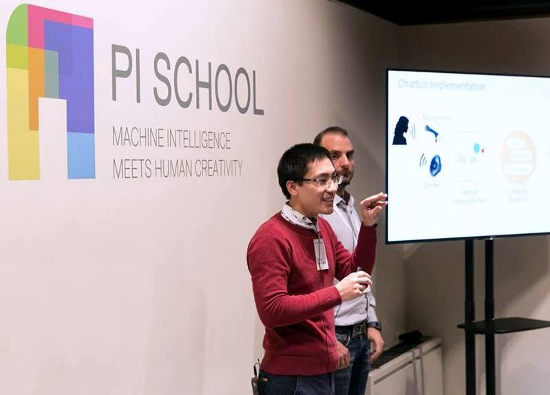

Trung Tran
AI Researcher & Engineer · Head of AI & Engineering Manager, Pixta · CTO, ClientScan · Fatima Fellow
trungtranthanh1990 [at] gmail [dot] com
I'm an AI researcher and engineer passionate about transforming cutting-edge AI models into practical, real-world solutions.
At Pixta Vietnam — the Southeast Asian arm of PIXTA Inc., Japan's leading stock content marketplace — I serve as Head of AI and General Engineering Manager for the Pixta Stock project. In this role I lead both the AI research team and the broader engineering organisation, overseeing the full lifecycle of AI products: from ideation and research through to production deployment and continuous improvement. Our team builds large-scale computer vision and NLP systems that power content discovery, quality review, and image generation for millions of creators and buyers worldwide.
I also serve as CTO of ClientScan — one of the world's fastest facial recognition systems, co-developed with Oxford University advisers and guided by co-founder Robin Paine, the former CTO of the London Stock Exchange and London Metal Exchange. We also co-founded TakeNote.ai, a voice AI startup in Oxford focused on meeting transcription and summarization.
My research interests lie at the intersection of foundation models, computer vision, vision-language models, voice processing, and agentic systems.

News & Highlights
- 2026 Selected as application reviewer for the MenaML Winter School 2026, organized by experts from Google DeepMind, QCRI, KAUST, Apple, and InstaDeep.
- 2025 New paper: CAMELLIA: Benchmarking Cultural Biases in LLMs for Asian Languages Submitted to ICLR 2026
- 2025 Fatima Pre-Doctoral Fellow — working with Dr. Ismet Dagli on efficient memory management for foundation models (LLMs / LVMs) on edge devices.
- 2024 Chapter published: "Generative AI: Ethical Challenges for Teachers and Learners" — in Generative AI in Teaching and Learning, IGI Global.
Media Coverage
- ClientScan Launches AI Facial Recognition Solution for the Hospitality Sector — Hospitality Tech
- ClientScan launches facial recognition product to help self-excluded gamblers — Biometric Update
- ClientScan to Pitch at Regulating the Game London 2023 — Regulating the Game
- Sorgenia e Pi School cambiano la User Experience — CMI Magazine
- Sorgenia sperimenta un nuovo chatbot — Energia Mercato